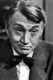
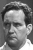
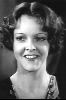

Country:United States, 54 minutes
Spoken languages:English
Genres:Action, Western
Director(s):Lewis D. Collins
Writer(s):Lindsley Parsons
Video Codec:Unknown
Number: 192


Certification:G
Storyline:
Rodeo star John Scott and his gambler friend Kansas Charlie are wrongly accused of armed robbery. They leave town as fast as they can to go looking for their own suspects in Poker City.
Cast:   

Medium: VHS tape,
Comments: Part of: John Wayne Western Collection Volume III
Loaned: No
Aspect ratio: Unknown